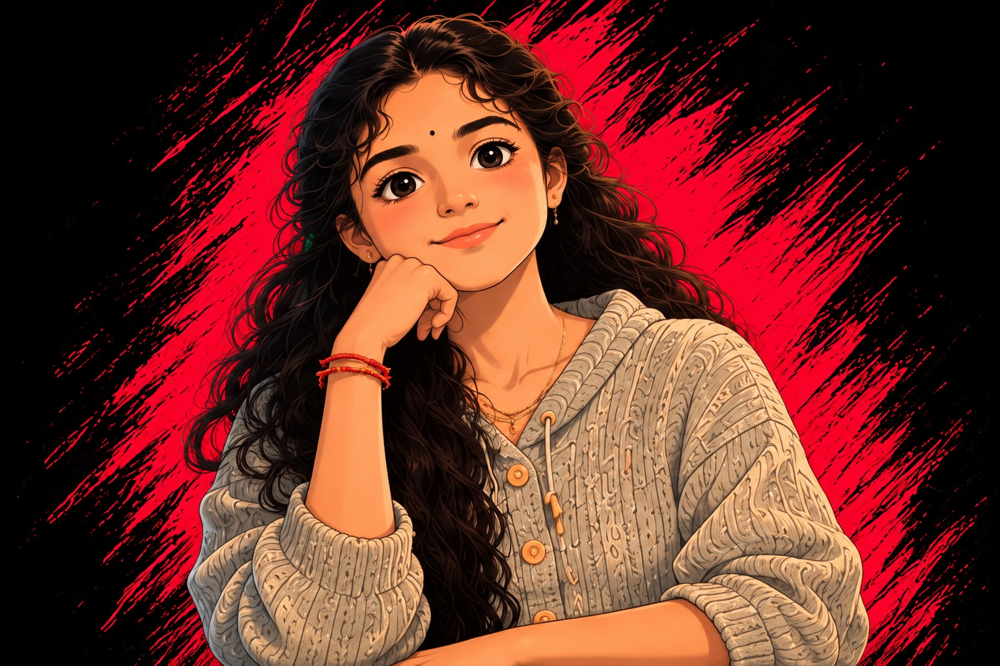
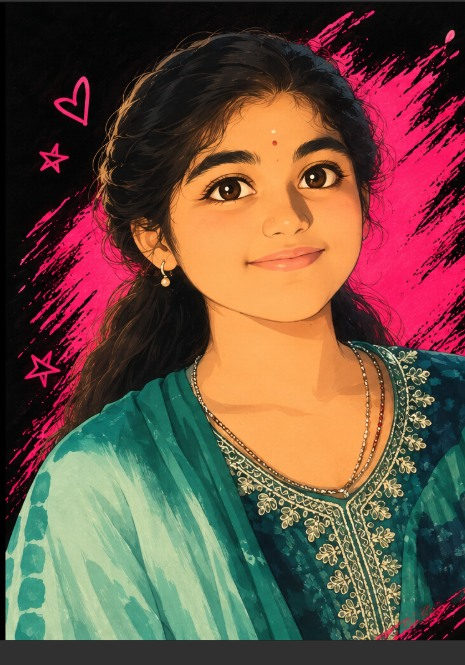

Java Development
Core Java, OOP, exception handling, Collections, JDBC, JSP and Servlets.
Core JavaJDBCJSPServlets
COMPUTER SCIENCE ENGINEERING GRADUATE
Java Developer · Web Developer · Curious Builder
I build practical web applications with Java, Spring Boot and MySQL — and I’m always ready to learn something new.

01 / A LITTLE ABOUT ME

A little about the person behind the code ↗I’m a Computer Science and Engineering graduate from SJM Institute of Technology, Chitradurga, interested in building useful, user-friendly applications.
I enjoy working with Java, databases and web technologies. Through projects and internship training, I’m developing my skills in backend development, problem solving and full-stack fundamentals.
02 / MY TOOLKIT
Core Java, OOP, exception handling, Collections, JDBC, JSP and Servlets.
Creating responsive web pages and connecting user interfaces to backend services.
Designing relational data and building database-backed application features.
03 / SELECTED WORK
A couple of projects where I turn ideas into working applications.
JAVA · JSP · SERVLETS · MYSQL
Online Food Ordering System
A web application where users can register, log in, explore restaurants and menus, and manage their orders. Built with Java Servlets, JDBC, DAO structure, JSP pages and a MySQL database.
SPRING BOOT · JAVA · MYSQL · REST API
Personalized E-commerce Recommendations
An in-progress shopping system that tracks search activity and purchase history to suggest relevant products. Includes registration/login, product search, order history, customer behavior tracking and backend REST APIs.
04 / LEARNING BY DOING
TAP Academy · Java Full Stack Web Development
Practising Core Java, object-oriented programming, exception handling, Collections, HTML/CSS/JavaScript, Spring Boot, SQL/MySQL and debugging through hands-on learning.
SJM Institute of Technology · Chitradurga, India
Graduated with a CGPA of 8.60/10.
A FEW PROUD MOMENTS
OUTSIDE THE CODE
Every new challenge is a chance to improve, build confidence and create something meaningful.
05 / HAVE A ROLE OR IDEA?
I’m open to entry-level opportunities, internships and collaborations. Feel free to reach out!
Email me ↗